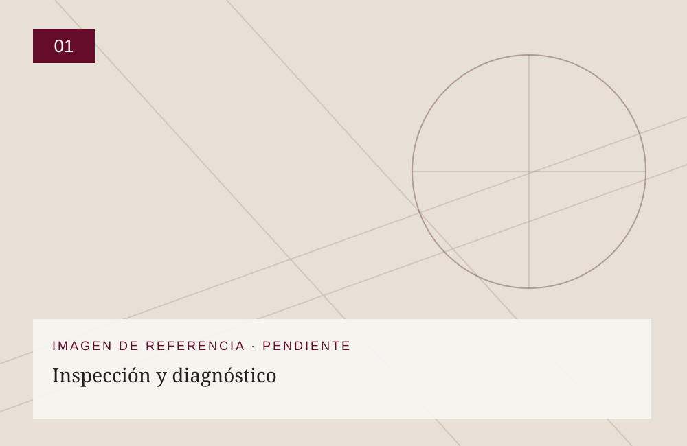
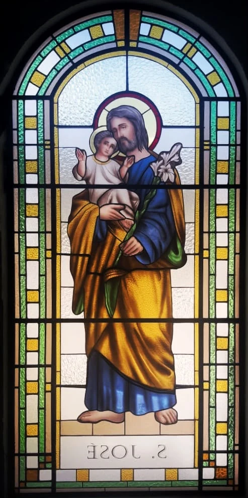
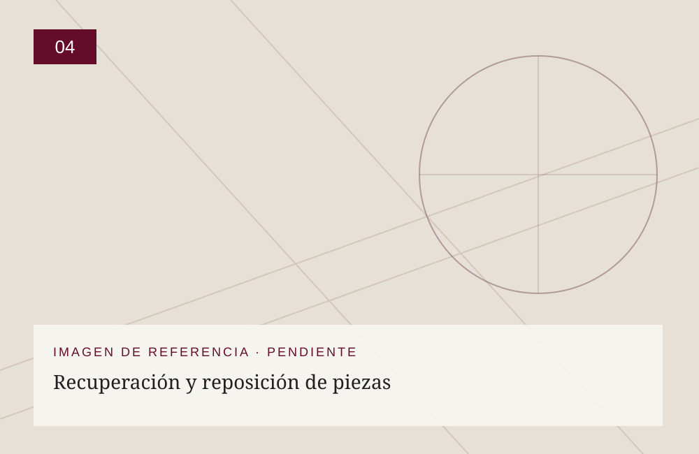
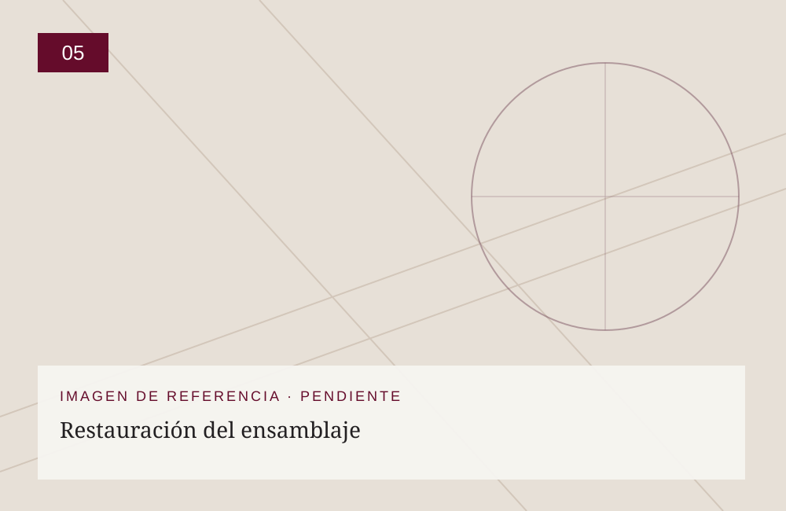
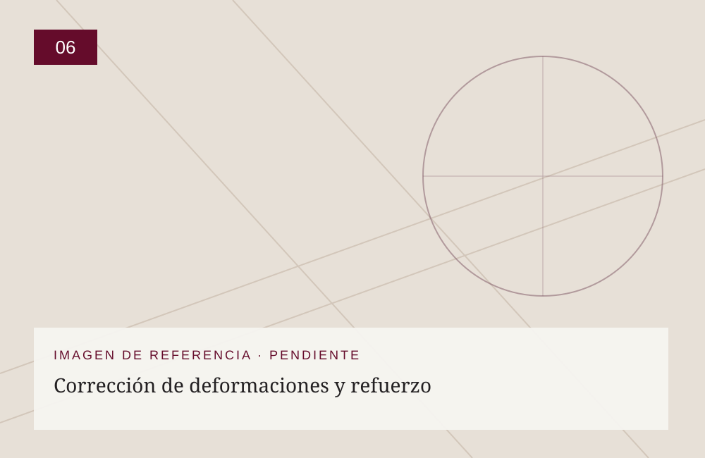
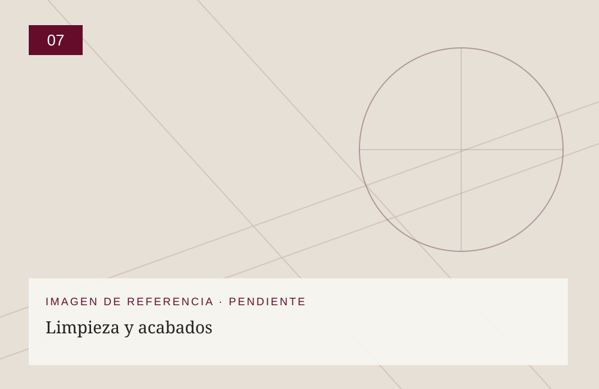
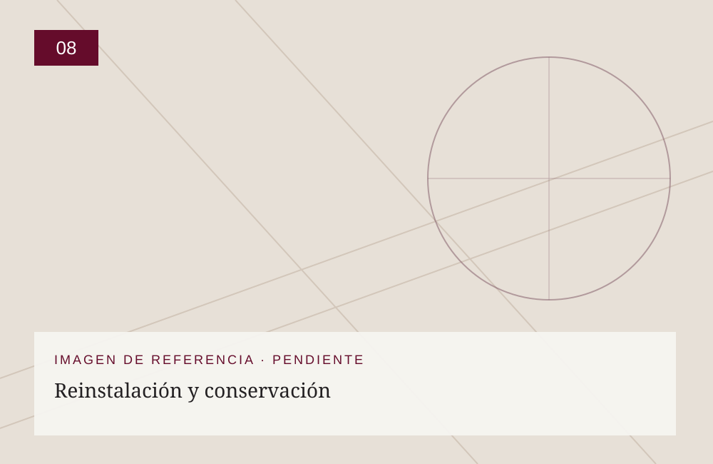

01
Inspección y diagnóstico
Identificamos fracturas, faltantes, deformaciones y deterioros de perfiles, soldaduras y soportes.
NUESTRO OFICIO / RESTAURACIÓN
Restauramos vitrales tradicionales y contemporáneos mediante intervenciones adaptadas a su estado de conservación. Priorizamos la preservación de los materiales originales cuando sea viable; las reposiciones se estudian para mantener la identidad artística y constructiva de la obra.

EL PROCESO
Las imágenes de las etapas son referencias gráficas temporales. Se reemplazarán por fotografías reales del taller sin alterar el contenido ni la estructura de la página.

Identificamos fracturas, faltantes, deformaciones y deterioros de perfiles, soldaduras y soportes.
Documentamos la composición y los daños mediante fotografías, mediciones y registros.
Cuando es necesario, desmontamos cuidadosamente los paneles y protegemos sus componentes.

Conservamos los vidrios recuperables y seleccionamos sustituciones compatibles cuando resultan indispensables.

Reparamos uniones y soldaduras; recuperamos o sustituimos perfiles y renovamos el masillado cuando corresponde.

Evaluamos y corregimos deformaciones, incorporando refuerzos compatibles cuando se requieren.

Realizamos limpieza controlada y revisión final de las superficies y uniones.

Reinstalamos los paneles y revisamos sus soportes; proponemos medidas de mantenimiento preventivo.